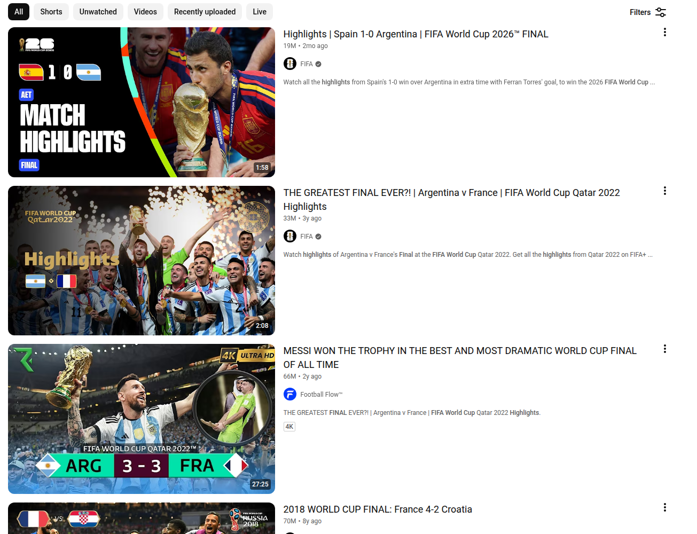
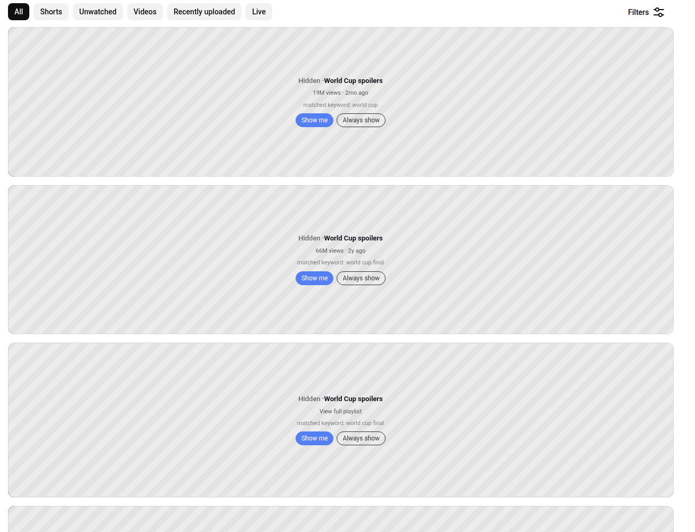
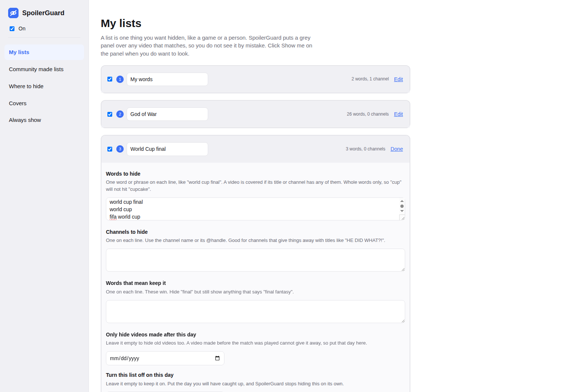

SpoilerGuard
GitHub
SpoilerGuard
GitHub
YouTube should not tell you the ending.
You look up one walkthrough because you are stuck on a boss. You search for the match you
recorded and have not watched yet. That is all it takes. From then on your home page is
full of thumbnails shouting the score, the twist and the last scene, and once you have
seen it you cannot unsee it.
SpoilerGuard puts a grey panel over those videos before you read them.
The panel tells you why it is there, so you always know what you are missing. When you are
ready, you click Show me.
Free. Works on Chrome. Nothing you watch is sent anywhere.
Before and after
The same YouTube search, with and without SpoilerGuard. The score is right there in the first thumbnail, and then it is not.


Three steps
It takes about a minute to set up and you never think about it again.
- Add SpoilerGuard to Chrome.
- Tell it what you do not want to see, or pick a list someone else already wrote.
- Use YouTube. Anything that matches is covered until you say show me.
What it can do
Hide by word
Give it words like "world cup final" and every video that mentions them is covered.
Hide a whole channel
Some channels give it away in the title every time. Right click one and it is gone.
AI powered hiding
Catches sneaky titles that mean the same thing without using any of your words.
Stops on its own
Pick the day you will have caught up and the list switches itself off that day.
Only new videos
An old video cannot give away a match played last night, so it can leave those alone.
Community made lists
Use a list someone else already wrote, and share yours back with one click.
You are in charge of it
Choose where it hides things: the home page, search, the videos beside the one you are watching, Shorts, channel pages, playlists and comments. Every cover has Show me for a quick look and Always show for a video you are happy to see.

Your viewing stays yours
SpoilerGuard works out what to cover on your own computer. It has no account, no sign in, and it never sends what you watch or search for to anybody, including us.